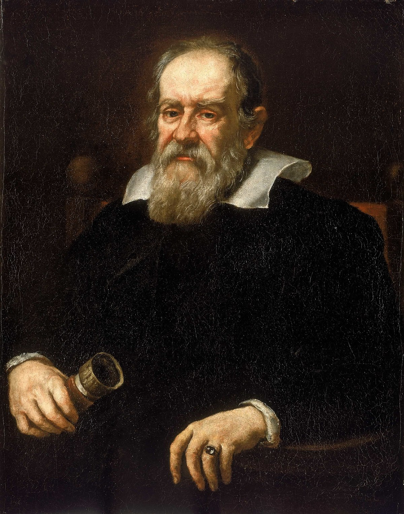

La revolucion cientifica
Que fue, caracteristicas y personajes mas importantes.
¿Que fue la revolucion cientifica?
La Revolución Científica fue un período que tuvo lugar entre los siglos XVII y XVIII en el que hubo cambios de paradigmas sobre la manera de analizar y observar la realidad. Surgieron nuevas visiones de la naturaleza a modo de disciplinas que reemplazaron la visión griega en torno a la ciencia que había dominado el pensamiento durante unos 2000 años.
Las nuevas disciplinas, que conformaron una nueva manera de comprender a la ciencia, fueron la física, la astronomía, la química, la medicina y la biología, entre otras. La superstición y la religión fueron reemplazadas por la ciencia, la razón y el conocimiento demostrable, dejando atrás en especial la atribución de responsabilidades a seres sobrenaturales.
Caracteristicas
Plantear nuevas maneras de comprender la realidad, a través de la razón, del conocimiento y de la demostración.
Derribar viejas creencias, como que la Tierra era el centro del universo.
Proponer el método científico de investigación.
Reemplazar la lógica aristotélica en torno al cosmos por el conocimiento adquirido a través de la observación y la experimentación
Crear instituciones para avalar la investigación científica.
Desarrollar importantes progresos en matemática que impactaron en diversas disciplinas, como física, astronomía y química. F
Proponer cambios de paradigmas, como las ideas de Nicolás Copérnico sobre el Sol como centro del cosmos.
figuras de la revolucion cientifica
| nombre | año | aporte |
|---|---|---|
Nicolás Copérnico |
(1473-1543). | formuló la teoría heliocéntrica del sistema solar, concebida en primera instancia por Aristarco de Samos, un antiguo astrónomo griego. |
|  Galileo Galilei |
(1564-1642) | Fue un importante observador astronómico, para lo cual mejoró además la fabricación de los telescopios, y es célebre por su apoyo determinante a la formulación copernicana del Sistema Solar. Es considerado el padre de la física moderna. |
 Isaac Newton |
(1643-1727) |  autor del primer gran tratado de la física moderna, “principios matemáticos de filosofía natural”, obra que sembró las bases para el surgimiento de esta ciencia. Aún se ponen en práctica sus principios sobre el movimiento, sus leyes termodinámicas y sus formulaciones respecto a la óptica y el cálculo infinitesimal. |
Tycho Brahe |
(1546-1601) | considerado el más grande observador del firmamento antes de la invención del telescopio y fundador del primer centro de estudios astronómicos, Uraniborg. Su obra permitió consolidar el estudio astronómico de manera sistemática |
 Johannes Kepler |
(1571-1630) | leyes sobre el movimiento de los astros celestes en su órbita alrededor del Sol, fue un cercano colaborador de Tycho Brahe y uno de los nombres fundamentales de la astronomía moderna. |
René Descartes |
(1596-1650) | padre de la filosofía moderna, de la geometría analítica, y de los mayores contribuyentes a la Revolución Científica. Es célebre su principio cogito ergo sum (“pienso, luego existo”), que sería esencial en el surgimiento del racionalismo, la fe en la razón y no en la voluntad divina. Su obra más famosa es el Discurso del método (1637), donde rompió claramente con la escolástica tradicional del Medioevo. |